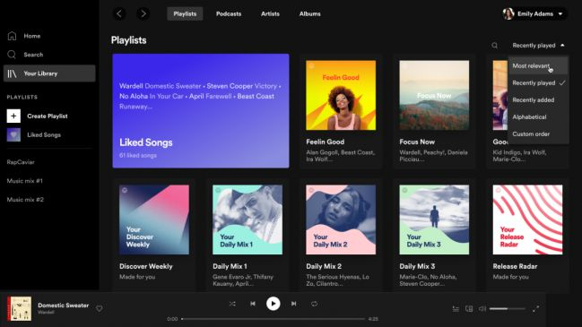

|
Spotify es una empresa de servicios multimedia sueca fundada en 2006,
cuyo producto es la aplicación homónima empleada para la reproducción
de música vía streaming. Su modelo de negocio es el denominado freemium,
que consiste en ofrecer un servicio gratuito básico y con publicidad y otro
con características adicionales como una mejor calidad de audio, libre de
publicidad y de uso ilimitado a través de una suscripción de pago.
El programa se lanzó el 7 de octubre de 2008 al mercado europeo, mientras que
su implantación en otros países se realizó a lo largo de 2009. Está disponible
para los sistemas operativos Microsoft Windows, Mac OS X, Linux, Windows Phone,
Symbian, iOS y Android.
En abril de 2019, el servicio contaba con 217 millones de usuarios activos, de
los cuales 100 millones eran usuarios de pago. En diciembre de 2020, las cifras
anteriores habían crecido hasta los 345 millones de usuarios activos, de los
cuales 155 millones eran suscriptores de pago. Esto supuso un incremento del 27%
en comparación con los nueve primeros meses de 2019, posicionándose como uno de
los proveedores de servicios de transmisión de música más grandes del mundo.
A diferencia de las ventas físicas o de descarga, que pagan a los artistas un precio
fijo por canción o álbum vendido, Spotify paga regalías según la cantidad de
reproducciones de artistas como proporción del total de canciones transmitidas.
Distribuye aproximadamente el 70% de sus ingresos totales a los titulares de
derechos (en su mayoría sellos discográficos), que luego pagan a los artistas en
función de lo pactado en contratos individuales. Según Ben Sisario de The New
York Times, unos 13.000 de los siete millones de artistas presentes en Spotify
menos del 0,2% generaron 50.000 dólares o más en ingresos en 2020.

-
Tu usuario
-
Menú
-
Escuchando ahora mismo
|
|